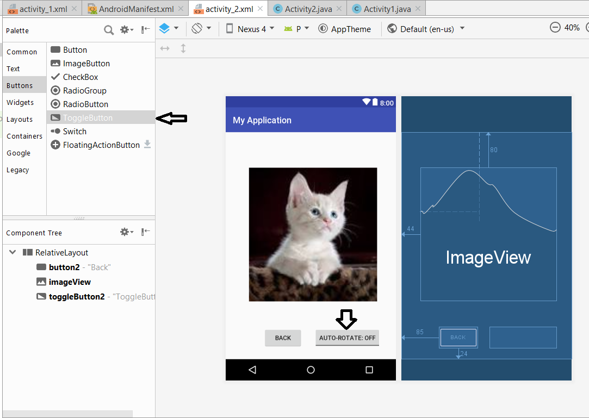

Introduction to Android Sensors
Objectives: In this tutorial you will learn how to activate and use Android Sensors. At the end of this session you will be able to,
- Use Toggle Button.
- Differentiate between different Android Orientations.
- Use the Auto-Rotate Feature using Android Sensor.
In this tutorial we are going to create an app which has a toggle button to ON or OFF the device’s auto-rotation feature. The image displayed in the application should be rotated accordingly as the device is tilted.
Refer following images,
In the second screen of our application, a toggle button named ‘AUTOROTATE: OFF’ is added.
When it is clicked, it starts the auto rotate feature in this application’s screen. When the user tilts the phone using the button highlighted in the picture, the picture get tilted automatically. The tilted image can be seen as follows,
When the user clicks on the toggle button, the screen returns to it’s portrait mode.
Part 1: Adding the Toggle Button
- Open your project
- Open activity_2 layout file in design mode
- Drag the toggle button from listed ‘Buttons’ and place it as shown in the image 
- Go to ‘text’ mode of the layout file
- Change the ‘ToggleButton’ tag’s properties to the values shown above.
- Add the extra properties as shown in above image.

Part 2: Adding the Functionality
- Add the above code snippets to Activity2.java file
- Also import ‘android.content.pm.ActivityInfo’ in your code.
- Observe the import statements. First, CompoundButton is imported because it is used to show the buttons which has two states such as On and Off. ToggleButton and Switch buttons are of CompounButton type. Since we are using ToggleButton, ToggleButton widget is imported in the next statement.
- A variable named ‘simpleToggleButton1’ of type ToggleButton is created.
- The variable is initialized with the ID of toggle button used in the layout file.
- setOnCheckedChengeListener() method gets triggered whenever the togglebutton is clicked. onCheckedChange() method handle the operations to be done when the state of toggle button is changed. Notice, that ‘isChecked’ variable is of ‘boolean’ type which contains either true or false value. If-Else is a conditional statement used in java. If the condition in ‘if’ statement is true then the code enclosed in it’s scope is executed. If the condition in ‘if’ statement is false then the code in ‘else’ statement is executed. setRequestedOrientation() is used to change the orientation of the current screen to the desired orientation of this activity. ‘AcitivityInfo’ class is used to get the information about current activity. ‘SCREEN_ORIENTATION_SENSOR’ is a constant used to set the current orientation of the screen according to the movement of the phone. Accordingly, when user turn off the Auto-Rotate using the toggle button, ‘else’ part of the code gets executed where the orientation is set back to ‘portrait’ mode using ‘SCREEN_ORIENTATION_PORTRAIT’ constant.
- Save the changes and Run the application.
- Push the code your GItHub account corresponding repository.